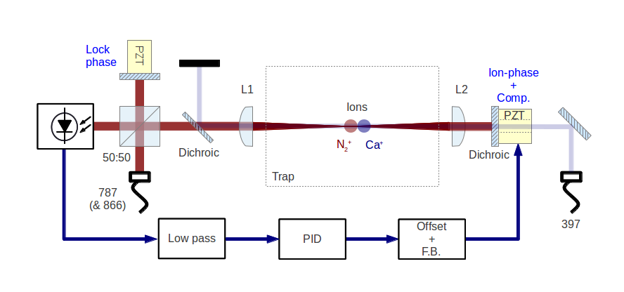

Research notes: April 2013
Table of Contents
Automation programming
13:31
I've done nothing except UI cleanups and usability improvements since yesterday. The client has been changed a little so that it can run without starting the p7888 automatically. That means that the user can change settings `offline' so to speak, before running a measurement and taking data.
In fact that's just given me an idea. The client need not really be just a PMT if we use this idea. Essentially it can just be a total client interface with all the functionality of the p7888: Before running a measurement the user can set up everything as he pleases using the settings of the p7888 and the client. That means we can build in all functionality, such as live-rate checking (PMT-mode) or data spectrum-taking, and let the user decide which functionality he wants on a case-by-case basis.
I wonder if this is the right approach, or having separate vis is better. On the one hand we have "do one thing well",XC and on the other hand we have repeated work and re-learning. In any case it's not difficult to build the all-in-one unit, so I might see how far I can get on that.
Automation programming
09:56
Settings-writing has been fixed. The DDE module takes one command at a time, so the client must send an array of strings with the settings options to the server, and the server loops over that array to write the settings. Right now the UI is just a textbox, but that can change some time further down the line.
13:29
The last known major issue in the software has been settled. This was a timing issue, where the client would issue a datasocket request for settings/data, and try and read it before the returning datasocket write could be published. The obvious answer was to add a small timing delay after the request, and everything works fine now.
I'm going to do a little bit of cleaning up, test the client as being used remotely (have been running client and server on the same computer up until now), and then add the whole thing to Hiroki's SVN repository for use on other computers.
NB
Lost a few days notes by messing up my backup routine. That's life. Will try and summarise below.
Automation programming
15:52
In brief, I wrote a module on the server to extract data from the p7888, and it works fine. The client asks for the data, the server asks the card what the spectrum size is and returns the data to the client.
However this highlighted a bug in the settings-writing module where the spectrum length is set. The value given to the card by the server is not being written at all. Interestingly the server doesn't realise this, as it receives back from the card that it has been written - only on the card itself the value hasn't changed. I believe this is an issue with the order of the data in the labview cluster and the structure of the acqSetting struct in the dll. I haven't managed to resolve this and so am instead changing tack.
In place of this module I'm going to use the provided labVIEW DDE modules for communicating with the card. These are likely to be slow, and don't provide all of the functionality of the dll, but that is okay if it's only being used to write settings at the start of operation.
I've finished a first draft of the server-side module, and just need to build an input into the client.
One more thing to note is that there's a small sync issue with the client and server. It seems that the data that the client receives from the server is always one step behind what is being asked i.e. I must ask the server for the current settings twice in order to see any changes that I made before the first call. I'll tackle this problem once I have the basic functionality down.
Automation programming
09:29
It seems I haven't reported having got a basic version of the software running in the end. Paring the system down to one that only starts the card, reads the status and stops the card (no settings writing or reading), I managed to get a reading of the output of a function generator hooked up to the Manati (cavity lab computer) p7888 card.
The reason why there was no update on previous versions was probably that I was pointing to the wrong dll. On both Manati and Marvin the correct one is
C:\Windows\System32\DP7888.dll
Still now, there's an issue when I run the full PMT software, that writes the settings at start and when they change, and reads the settings every timeout loop. Not sure what the issue is just yet, but it causes both lv and the server to crash. Potentially it's an issue with volume of commands?
13:41
It was, in fact, an issue with the volume of commands. I wrote a small vi that checks the number of commands in the function buffer, and just loops until it is empty. This was then built in to all of the low-level, function-calling vis that make up the client. It now works fine, if a little slowly. The slowness can't much be helped without some serious rewrites and a solution to the double-server problem (my LV vi is a server for the P7888 server).
13:50
The next step is to write a vi that extracts a spectrum from the data. I need to look back over my notes for how I did this in the past with C.
Automation programming
10:12
I didn't have any immediate luck adding client-side buffering to the system yesterday. It's difficult to tell what was going wrong, but the status of the card was not updating on the server or client properly (i.e. tracking the amount of time the measurement had been on etc.). I think there's likely some issues in synchronisation further up the line, that is between the LV server and the P7888 server, which I can't do anything about.
I can try and make the buffering more robust though, by asking the server to check the buffer length, and to execute commands as long as the buffer is not empty.
Automation programming
13:29
The quick fix mentioned above isn't quite enough to get things running properly. There are many situations where client-side, we would like to call a series of functions in succession. Since the server updates independently of the client, there is not guarantee that functions calls have been read by the server before the next function call is written by the client.
For this reason we need to have a ready/received flag set by the server. Now every time the client loads a vi that calls a function, it must first wait for the server flag to be set before sending the function. The server sets the ready flag…
16:06
Got caught in the middle of an entry there. Probably a good thing though, since having thought it over, the application of this kind of synchronisation is going to be more complicated than the track I started off with above. It will essentially need two variables, a ready and a received. The client then only sends when it reads ready, and only moves on when it reads received. I suppose the same could be accomplished with one variable, and detecting a change of state of that, but anyway this is all rather complicated, when there appears to be an easier solution: client-side data buffering.
Using client-side data-buffering, we can make sure that the server receives each command in turn, and as long as it refreshes at the same rate or faster than the client, we can probably be sure of never filling the buffer or missing a command. We should do some work to make the server run as fast as possible in order to give this method good responsiveness, but it's by far the easiest approach to this problem at the moment.
Automation programming
13:32
I finally debugged the error on my labview p7888 server. I was getting a non-specific datasocket error that would crash it, when trying to communicate using the client on another computer. It turns out that the error was not in fact a datasocket error, but rather a programming error.
The problem was that the server would read the `function id' variable to check if it was non-zero and if it was, then it would execute that function. However the function id variable was not being reset client-side (it cannot be reset server side because of write-restrictions). I'm not 100% sure how, but this messed up the datasocket protocol and gave me the error I was seeing. Perhaps it had something to do with functions being repeatedly called.
The quick-fix was to change the server code so that it would look for a change in the `function id' before executing it. As long as the function id is initialised as none, this has the same effect and is robust against the issue I was having.
Dipole force detection schemes
11:50
During a previous meeting, Matthias proposed that we use a technique similar to the one shown here: http://www.nature.com/nphys/journal/v5/n9/full/nphys1367.html, instead of the standard sequential amplification and cooling scheme we initially planned.
The basic outline is that we use the dipole force to seed an oscillation, amplify it using the blue detuned laser, and then stabilise that oscillation by simultaneously increasing the power of a red detuned cooling laser. Ideally then we would be able to maintain a stable oscillation, seeded by a single shot of the dipole force, for long enough to measure the oscillation frequency. This means we only need a single shot per measurement, instead of many dipole force -> amplification -> cooling sequences. This potentially decreases the amount of time we need to have the molecule exposed to the dipole laser, and thereby suppresses unwanted spontaneous emission.
The problem I see with this at the moment is that the oscillation seen in the paper above is self-seeded. Thus for a single experiment we cannot distinguish an oscillation seeded by the dipole force from an self-seeded one. One way around this is to use multiple shots, and then phase information can be extracted from the correlations - but then we are back to multiple shots, but with a more complicated setup (lasers need to be more stable to maintain oscillations).
I wonder if another possibility is to mix the photon signal with the driving voltage, to pick out the part at the correct phase. There is still a danger, I fear, of false positives in the event that the random self-seeded phase happens to match that of the driving force. The likelihood greatly diminishes if we add just a second shot of the experiment however i.e. this could have better scaling with the number of shots than other methods.
12:02
It was my initial understanding of this method (before any of this write-up) that helped to push us towards investigating this method in Kevin's trap. Having thought over it since, I'm thinking that that understanding was flawed. Here's the though process:
We cool the ion in the trap, and expose it to both a red and a blue detuned laser on the cooling transition. The power ratio of these lasers is tuned so as to sit just below the threshold of oscillation (see the paper above). If the molecule is in the ground state, then when the dipole force is applied, this kicks the oscillation into motion and keeps it maintained. If the molecule is in another state, nothing else happens.
I think this reasoning is flawed because the oscillation threshold is fixed only by the power ratio, and not by the size of the oscillation. Although increasing the amplitude of oscillation of the ion the trap will increase the amplitude of the force acting on it from the blue detuned laser, it will also increase the amplitude of the force acting on it from the red laser, and thus the ratio of amplitudes is maintained and no oscillation occurs.
So yeah, just thought I'd write that down so that I don't make the same mistake again.
Photo-ionisation laser
11:52
Jack is still working on optimising the laser. The power rails are still down, but Matthias is contacting the electrician to get it all done as soon as possible. Then I will be pumping down the test chamber and looking for PI.
Automation/simulation software
12:02
For fast processing of the data we're receiving from the experiment we need a quick autocorrelation algorithm. I think Wolfgang's code is likely to be as fast as possible without using parallel processing, yet is still somewhat slow for large datasets. Therefore I've been looking into using parallel processing with GPUs. NVidia have released a programming interface for general processing with their GPUs called CUDA, and there is also an open source approach, which can use non-nVidia GPUs, called `opencl'.
Currently setting up a good programming environment to work with (Git and BitBucket repo), while I wait for ITS to install windows on my main computer. This will probably be necessary for coding CUDA so that it will work on our lab computers.
Measurement automation Nic Kevin
10:18
Handing this over to Kevin to work on. I've shown him the server/client LV program I wrote, and he's going to try and crack the datasocket problem I was having. First off he's working on an interesting idea Matthias had on amplifying the dipole force motion: If we illuminate the ions with a red and blue laser simultaneously, then perhaps, by tuning the powers of the two lasers in the same way as in the matter-laser paper (Udem), we can stabilise the oscillation and keep it going `indefinitely'. This would mean that we would require only a single dipole force excitation, and could follow this up with just a single measurement period. This would be ideal for minimising the probablity of spontaneous decay.
The next point is that I've realised that I never thought of a method for extracting a live list-file (timestamps of photon arrivals) from the p7888. That's alright however, because this is functionally equivalent to extracting a live spectrum from the machine, with it measuring in `continuous' mode. We can get the same time-resolution by setting bin-widths to 1, and we extract times by multiplying bin-width by channel. This is in fact better than timestamps, because it's already in a useful format for calculating auto-correlations.
Photo-ionisation laser Nic Amy
10:25
With the interferometer more or less done (until it gets moved over to the main table), I've been tasked with getting the photoionisation up and running. The dye laser has just been serviced and should be putting out a lot more power than before, and hopefully enough to ionise N2.
15:22
Jack has been working on optimising the output of the dye laser during the morning. The power rail for that side of the table is still down, so Amy hasn't chased up the workshop about a backing pump that will be used for pumping down the test-chamber.
Interferometer electronics
09:46
I've ended up going with C = 290 nF and R = 50 Ohm. This in principle gives us a cutof of 11 kHz, which is quite low, but very likely to be above the resonance of the PZT-mirror assembly.
With this configurations, there is very little of the modulation visible on the feedback signal, and it is certainly smaller than the other dominant noise sources being compensated.
We still have to work out where 250 Hz noise is coming from (it doesn't seem to be any of the light sources), since that is still the dominant source of noise, but otherwise the system seems to be working fine.
Interferometer setup
09:57
Now that the electronics are up, the test-setup is more or less done. What's left is to collect together the parts for the real setup.
The main difference will be that the main-arm's PZT-mirror assembly must allow for optical access of a 397 nm cooling laser for axial cooling (see fig. dipoleinttrap). Additionally, the fibre outcoupling lens for the 787 and the first focussing lens (L1) will be achromatic doublets. This will allow us to overlap the dipole-force laser with the ions by passing 866 through the path and using it to repump/illuminate ions. Once aligned this is turned off, and repumping is done from the radial direction, in order that the 866 light does not interfere with the interferometer.

Schematic of the dipole-force laser interferometer setup as it will be at the trap
Simulations
11:00
At a previous meeting I raised the idea that, at least for the first experiments into detecting the dipole force, we might have two Ca ions in the trap with the N2+, rather than just one. On the one hand this will reduce the acceleration from the dipole force due to the increased mass of the crystal, but on the other hand it will increase the signal-to-noise ratio of the doppler velocimetry. Just from a hand-wavey perspective I'd expect the gains to be higher than the loss (maybe double signal to noise vs one-third reduction in translation of force to movement?).
In order to get a better idea of this trade-off in reality, I can build a simulation based on the molecular dynamics sims I've been using so far. There is a whole other level of complexity involved when we introduce multiple bodies to the system, but it's a generally useful simulation, and perhaps one that can be generalised for large numbers (e.g. 3-d ion crystals). Furthermore it might become a good excuse for looking at coding using CUDA, which is a toolset for parallel programming using 3-d graphics cards.
11:46
It looks like the graphics card on my n10j laptop is CUDA supported, and that's around four years old, so I'm guessing there's support for my main computer (still waiting on ITS to install windows on it). Accessing the CUDA functions from MATLAB requires the "Parallel computing toolbox" from Mathworks, so I guess I need to ask whether the university owns a copy of this.
The alternative is to use C or python. Ideally we would be using a quantum optics toolbox, which would rule out C in the ideal case. Also I believe it's not possible to run Python's QO toolbox on windows, so maybe that's ruled out too. On the other hand, we can revert to non-qo toolbox calculations of the dynamics (3 level or 2 level systems), in order to be able to utilise C or Python and CUDA, if the the parallel computing toolbox is not accessible.
13:27
According to this link: http://qutip.googlecode.com/svn/doc/2.2.0/html/installation.html#installation-on-windows it's possible to install QuTIP in windows as long as the initial python distribution is python(x,y): https://code.google.com/p/pythonxy/. Follow the instructions in the first link for the full details. This is another alternative to MATLAB with the Parallel computing toolbox.
Interferometer electronics
09:30
Interferometer was succesfully locked yesterday. I used one of the old modular, rack-mounted lock-boxes for PI feedback. The locking signal has one major source of noise at 250 Hz, with an amplitude of 0.2 V. The complete fringe amplitude is 8 V pk-pk. Beneath the 250 Hz noise, the signal is much cleaner at roughly 50 mV noise amplitude or less. These amplitudes correspond roughly to > 10 nm and > 2.5 nm ( the ">" coming from the non-linearity of the sinusoid).
Points of note: a) The full range of the amplifier (160 V) is just under one wavelength on the secondary PZT. This is less than expected, but possibly not a terrible thing, as it makes us robust to electronic noise in that arm. It may however cause problems in obtaining the best locking signal for a specific overlap of the standing wave with the ion.
b) The feedback signal does not change drastically over time, indicating that there is not a large amount of drift in either of the PZTs extension. What drift there is, I would imagine would be much more likely to come from the longer, less stiff PZT on the main arm. There's no real way to test this in the current setup of course, so maybe I should keep that in mind.
15:28
Low pass filter design:
\\\\ \(f_c = 1/(2\pi RC)\)
\\
With 6 dB per octave for a first order filter, we can probably set the cutoff at 50 kHz and be fairly happy that frequencies 100 kHz and up are sufficiently attenuated. So:
\\\\ \(f_c = 50~kHz, R = 1~k\Omega\)
\\ \(C = 3~nF\)
\\
Alternatively 60 nF for 50 Ohm.
Interferometer setup
13:30
The dipole force laser must come in through the trap axis in order for us to look at the axial secular motion (least noisy). We also need cooling lasers in this direction, so I need to replace the retro-reflecting mirror on the main arm with a dichroic mirror (transparent for 397 nm) in order to get the cooling beam in. There must also be a a dichroic mirror for picking off the cooling beam before it hits the interferometer diode.
There will likely be some issues with overlapping the dipole force with the ions. One suggestion is to couple an 866 to the same fibre that the 787 comes from, and using achromatic optics, to overlap the beams by looking for ion fluorescence from repumping. The achromatic optics are necessary to overcome issues with dispersion between the different wavelengths.
For fine adjustment, once overlap is achieved, there is some consideration of installing a thick glass plate on an adjustment stage, which would allow us to displace the overlapped beams by a small amount.
Dipole force interferometer
The photodiode size ended up not being the real issue. More important was that the diode was being saturated when pointed at regions of highest contrast. Regions where the intensity were smaller were naturally lower contrast (overlap is worse in the wings), and so the contrast ratio was low. I found a less sensitive photodiode that can look directly at the beam, and have found a roughly 88% contrast ratio, which will do the job for now.
- N.B. -
An issue to bear in mind is that, just because the interferometer arms are overlapped at the output, there is no guarantee that the beam is overlapped with itself in the main arm (the dipole force arm). Some thought has to be put into how we will deal with this come the main experiment.
Interferometer electronics
The electronics for the interferometer should at first iteration be fairly simple. All we need is a low pass filter to filter out the AM at ~ 1 MHz, and a simple PID to feedback to the main arm's PZT for compensation of acoustic noise. The control for this arm must also have a variable offset.
The second arm's PZT must be hooked up to a PZT-amp as well, but there's not a lot of testing we can do as far as that's concerned. This will allow us to fix the phase at the interferometer output when we are required to change the offset of the PZT on the main arm to overlap the standing wave with the ion.
We might need to scavenge/buy another PZT amplifier to get all of this functionality. Stealing from the SCL/Cs laser is a short-term solution.
Dipole force interferometer
Checked the polarisation of the beam coming out of the PM fibre. It was so scrambled as to be impossible to optimise on the polarimeter. One contribution to this was the fact that I was using a waveplate for 794 nm (not 787 nm). But once that was fixed, and the input to the fibre was confirmed to be purely polarised, the fibre itself was found to be very bad at PM, with the best attenuation I could manage at 8 deg (maximum ellipticity 20 deg).
I swapped that fibre out for a brand new one from Thorlabs and it was exactly the same. A third fibre (exact same model, new) was a lot better, but still not as good as I would expect - it gives 17 dB attenuation (prefer upwards of 20 dB).
Even after `fixing' these polarisation issues the contrast is still almost exactly the same. My current thinking is that this is an issue with the extension of the detector surface: If we look at the interference on a card, it seems clear that there is a much larger contrast than is measured on the oscilloscope, but it comes in `bands' across the spot of the overlapped beams. If the size of the detector is much larger than these bands, or if it is not aligned perpendicular to the wavefronts, then we can expect there to be a limit to the contrast ratio obtainable.
The cure would be to either image the spots through a pin-hole, or use a PD with a very small surface (more efficient than the former).
To do
To do, Molecular Lab Experiments
TODO Photoionisation of N2 Nic Amy
- DONE Install pump and pump down PI test chamber Nic
Installed and seems to be pumping down fine now with the turbo on.
- DONE Get a PI spectrum from the test chamber Jack Nic
[X]Try out the newly serviced laser. | Jack's tuned it up and producing a good amount of power 1 mJ (of 4 mJ new)
Jack's got a preliminary spectrum. Needs tuning.
- TODO Identify gnd-state transition
DONE Dipole force laser setup Amy
- DONE AM setup
- DONE New laser
Set up and lasing at correct wavelength. Power is lower than the 100 mW it is rated at with an external cavity, but we are not exactly at the emission peak of the bare diode (took a lot of tuning away from the place with easiest optical feedback). Further, the bare diode is rated at 200 mA, but I'm not sure how high I can run it with an external cavity.
λ = 787.475 nm,
Ith ~ 45 mA,
T = 25.36ˆ C,
I = 77.54 mA,
VPZT = 107 V,
P ~ 10 mW,
- DONE Single-pass AOM and optical fibre
- Set up on the test table.
- DONE Inteferometer setup
Find appropriate PZT for second arm of the interferometer (small travel, high stability) [X]
Improve contrast ratio: Sort out focii and polarisation
[X] Polarisation roughly optimised (17 dB PM) [X] Overlap/contrast ratio roughly optimised (80 %)
[C] Replace main arm mirror/PZT for dichroic and cylinder piezo (397 nm input) -> No zero deg. dichroics, setup will inc. two 45 deg ones. instead - more complicated, more losses but too expensive otherwise | [X] Source another dichroic (397 nm output) | [X] Source achromatic asphere (787 & 866) fibre-coupling lens for | overlapping the dipole laser with the ions [X] Source Achromatic 100 mm lens for above. |
- DONE Feedback electronics
[X] PID feedback on main arm + offset control. [X] Offset control on secondary arm.
[X] AM on AOM. [X] Low pass and locking again. [-] Fine tune/kill 250 Hz noise.
- TODO Hand over to Amy
TODO Work on DACs for the new SCL Nic Kevin
- TODO Building boards
- Matthias has the plans:
Pester him for them.
- Received:
Matthias sent them ages ago, but I didn't spot them in my mail. He's still yet to order the actual DACs though, so there's still time. I could make the boards however, in preparation.
- Matthias is making the boards:
Matthias is making the boards, I think it'll just be up to me to program the whole thing.
- Pins used:
Check with Matthias that his design has incorporated these pins as I/Os:
- Port D: RD8 (peak detect input), RD5 (CNinterrupt)
- U2RX pins, unless he's already designed these away
- TODO Programming
- TODO Write SPI library for PIC comms with computer
- TODO Write SPI library for PIC comms with DAC
- TODO Write SPI library for PIC comms with computer
TODO Code an automation program for experiments Nic Kevin
- DONE Flow chart for experimental sequence
Gave this to Kevin a while back.
- DONE Fix datasocket bug
Debugged. Not a problem with the datasocket. Rather I was not resetting the function socket after it had been called, causing the program to constantly be calling functions, and this messed up the p7888 server.
- DONE Debug the rest of the program
Program debugged
- TODO Write data extraction vi
Look back at notes as to how this was done.
- TODO Fast autocorrelation calculation
[ ] Try using CUDA for a fast autocorrelation calculation |
- TODO Contact FAST ComTec
About the issue with having to communicate with the card via the server.
TODO Simulations Nic
- TODO One or two calcium ions
Although an extra ion will reduce the acceleration of the crystal due to the dipole force, is the increase in signal a good trade-off?
- TODO 2-laser motional amplification for stable oscillation
c.f. Matter-wave laser paper from Thomas Udem
- CNCL Adiabatic switching on/off of the cooling laser
Optimal parameters for adiabatic switching in order to avoid `kicking' the ions when switching between cooling and optical-dipole force and amplification periods. What is the typically used function?
This optimisation can be done experimentally, there's no need for a simulation really.
To do, General
CNCL Check for tantalum for ovens
Find submissions for ITCM-Sussex.com
Matthias has reminded us to look through the old website for these.
I should add a scanning cavity lock section to the "Technology" page of the site (extended abstract?).
Furthermore, I think it'd be nice to look over the diagrams that are on there already, and think about whether or not I could make some improved ones in POVRAY.
Rev. Sci. Instrum. 81, 075109 2010:
"We have implemented a compact setup for long-term laser frequency stabilization. Light from a stable reference laser and several slave lasers is coupled into a confocal Fabry–Pérot resonator. By stabilizing the position of the transmission peaks of the slave lasers relative to successive peaks of the master laser as the length of the cavity is scanned over one free spectral range, the long-term stability of the master laser is transferred to the slave lasers.
By using fast analog peak detection and low-latency microcontroller-based digital feedback, with a scanning frequency of 3 kHz, we obtain a feedback bandwidth of 380 Hz and a relative stability of better than 10 kHz at timescales longer than 1 s."
Current undergraduate/masters projects are focused on implementing our scanning cavity lock design with a cheap and feature-rich microcontroller from the dsPIC line (http://www.microchip.com/). Automated impulse-response-function analysis and digital filter generation will provide significant improvements to bandwidth and stability.
- Comments on current webpage:
- There are no sub-titles at the lowest level of the pages when looking at the research interests. e.g. "ion-photon entanglement" is a page inside "cavity-QED", but when you click on it it is title only "cavity-QED".
- Only "charge exchange reactions" in the molecular physics section. Should we show something about our research direction?
- Can we add references to our papers in the "crystal weighing" and "optical excitation" sections?
Ask Hiroki for a look at the code for cavity mode prop.
Asked Hiroki, but he hasn't finished it yet.
Oxford group proposal research
-
- Drewsen group BBR assisted cooling
- Previous ammonia research
- Ammonia level structure for state-detection
-
- Drewsen and Schiller both have papers on BBR according to the proposal.
- Drewsen proposal uses Raman transitions, requiring narrow/stable lasers - does this apply to our system?
E-mail Brianna to assess the status of the Stark decelerator.
- General:
Look closer at the reactions that are proposed to investigate in the proposal, and make sure that there are going to be setups for those experiments, or ones to do with our research here, at Oxford.
- Reactions -> Deuterium fractionation:
Reactions involving H atom transfer to ionic species e.g.:
Ca^+ + HD0 -> CaH^+(CaD^+) + OD(H) Nd_3^+ + HDO -> ND_4^+(ND_3H^+) + OH(OD)
Addition reactions with H atom elimination (e.g. in proposal), and Near-thermoneutral charge transfer reactions (e.g. at link).
- Experimental:
In-situ measurement of masses and numbers of reactants and products -> Monitor sequential isotopic exchange.
Quantum-state selected reactants from stark decelerator (neutrals) and REMPI (ions). Thermal redistribution of ions monitored by non-destructive state-detection.
Control internal states using BBR assisted schemes (see nphys1604 and nphys1605).